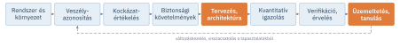
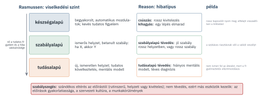
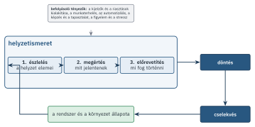
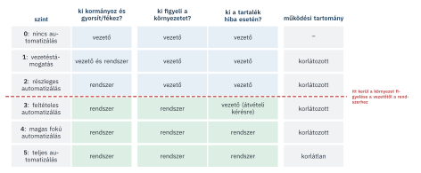
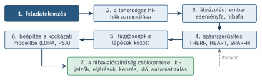

16. Az ember a biztonságkritikus rendszerben

A balesetvizsgálati jelentések visszatérő kifejezése az „emberi hiba”. A 1. fejezetben azonban láttuk, hogy ez a megállapítás ritkán magyaráz bármit: a frontvonalban dolgozók tévedései többnyire a rendszer tervezéséből, a munkakörülményekből és a szervezet döntéseiből fakadnak, és ugyanezek az emberek a legtöbb nap éppen azzal tartják biztonságban a rendszert, hogy alkalmazkodnak a váratlan helyzetekhez. Ez a fejezet az embert a biztonságkritikus rendszer részeként vizsgálja: hogyan és miért tévedünk, mitől függ, hogy a kezelő érti-e a helyzetet, milyen csapdákat rejt az automatizálás, hogyan tervezhetők jó riasztási rendszerek, és hogyan számszerűsíthető az emberi teljesítmény a kockázatelemzésben.
A fejezet végére képes leszel
- az emberi tévedéseket Rasmussen viselkedési szintjei és Reason hibatípusai szerint osztályozni, és mindegyikhez megfelelő megelőző intézkedést rendelni;
- elemezni a helyzetismeret szintjeit, és felismerni a kijelzők, a riasztások és az automatizálás hatását a kezelő teljesítményére;
- megmagyarázni az automatizálás iróniáit és a járműautomatizálási szintek biztonsági következményeit;
- a riasztáskezelés fő elveit és teljesítménymutatóit alkalmazni;
- emberi hibavalószínűséget becsülni a HEART és a SPAR-H módszerrel, és értelmezni a függőségek hatását;
- megítélni, mikor számítható be a kezelői beavatkozás független védelmi rétegként.
16.1. Emberi hiba: tünet vagy ok?
Az emberi hibának két szemlélete van. A hagyományos szemlélet szerint a rendszer alapvetően biztonságos, és az emberek megbízhatatlansága veszélyezteti; a megoldás a szigorúbb szabályozás, a fegyelmezés és az ember kiváltása automatizálással. Az újabb szemlélet szerint az emberi hiba a rendszer mélyebb problémáinak tünete: azt jelzi, hol nem illeszkednek egymáshoz a feladatok, az eszközök, a környezet és az emberi képességek (Reason 1997; Leveson 2011). Hollnagel Safety-II szemlélete ennél is tovább megy: a biztonság nem a hibák hiánya, hanem a rendszer képessége arra, hogy változó körülmények között is sikeresen működjön, és ennek legfontosabb forrása éppen az emberi alkalmazkodás (Hollnagel 2014).
A két szemlélet nem zárja ki egymást, de a gyakorlati következményük eltér. Ha egy kezelő rossz szelepet zár el, a hagyományos szemlélet a kezelőt oktatja ki, az újabb azt kérdezi meg, miért lehetett a két szelepet összetéveszteni (azonos kinézet, rossz címkézés, rossz megvilágítás, időnyomás), és a rendszert alakítja át úgy, hogy a tévedés nehezebb legyen, vagy következmények nélkül maradjon.
16.1.1. Viselkedési szintek és hibatípusok
Rasmussen három viselkedési szintet különböztetett meg (16.1. ábra) (Rasmussen 1983). A készségalapú viselkedés begyakorolt, automatikus mozdulatsorokból áll, kevés tudatos figyelemmel (egy rutinszerű kapcsolási művelet). A szabályalapú viselkedés ismerős helyzetben betanult szabályokat alkalmaz („ha a nyomás magas, nyisd a lefúvatást”). A tudásalapú viselkedés új, ismeretlen helyzetben tudatos következtetésre és a rendszer mentális modelljére épül.
Reason erre építve osztályozta a nem szándékos hibákat (Reason 1990). A készségalapú szinten csúszások (a szándék jó, a kivitelezés rossz: rossz gombot nyom meg) és kihagyások (egy lépés elmarad: elfelejti visszaállítani a kiiktatást) fordulnak elő. A szabály- és a tudásalapú szinten tévedések: jó szabály rossz helyzetben, rossz szabály, illetve hiányos mentális modellen alapuló téves diagnózis. A szabályszegés ezektől elkülönül: szándékos eltérés az előírástól, amely lehet rutinszerű (mindenki így csinálja), helyzeti (az előírás az adott helyzetben nem követhető) vagy kivételes.

Az osztályozásnak gyakorlati haszna van, mert minden hibatípusra más intézkedés hat. A csúszások és kihagyások ellen a jó ergonómia, a megkülönböztethető kezelőszervek, az ellenőrző listák és a visszaigazolást kérő kialakítás véd; a képzés itt keveset segít, hiszen a kezelő tudja, mit kellene tennie. A szabályalapú tévedések ellen a helyzetek egyértelmű jelzése és a jó eljárások védenek. A tudásalapú tévedések ellen a rendszer működésének mély megértése, a szimulátoros képzés, a jó kijelzők és a döntéstámogatás. A szabályszegések ellen pedig a gyakorlatias, végrehajtható előírások, a munkaterhelés és az időnyomás csökkentése, és egy olyan szervezeti kultúra, amely a jelentést és a tanulást jutalmazza, nem a hibáztatást (Reason 1997).
16.2. Helyzetismeret és ember–gép felület
A kezelő akkor dönt jól, ha érti, mi történik. Endsley modellje szerint a helyzetismeret (situation awareness) három szintű (16.2. ábra) (Endsley 1995): a helyzet lényeges elemeinek észlelése (milyen értékeket mutatnak a műszerek), azok megértése (mit jelentenek együtt, milyen állapotban van a rendszer), és a közeli jövő előrevetítése (mi fog történni, ha nem avatkozom be). A helyzetismeret elvesztése a vizsgált légi balesetek jelentős részében szerepet játszott, és a folyamatipari és a közúti balesetekben is gyakori.

Az ember–gép felület tervezésének célja a helyzetismeret támogatása. Néhány jól bevált elv: a kijelző a feladathoz és ne a rendszer belső szerkezetéhez igazodjon; az eltérést a normál állapottól mutassa, ne csak a nyers értéket; a trendeket is jelenítse meg, mert az előrevetítéshez a változás iránya kell; az üzemmódot (kézi, automatikus, kiiktatott) mindig egyértelműen mutassa; és a ritkán használt, de kritikus funkciók is legyenek könnyen elérhetők. A Therac-25 érthetetlen hibaüzenetei (15.2.2. szakasz) és a texasi finomító hibás szintkijelzése (1.2. szakasz) azt mutatják, hogy a rossz felület a balesetek egyik leggyakoribb látens feltétele.
16.3. Az automatizálás iróniái
Az automatizálás a rutinfeladatokat megbízhatóbban és fáradhatatlanabbul végzi, mint az ember. Bainbridge klasszikus tanulmánya azonban rámutatott az automatizálás iróniáira (Bainbridge 1983). A tervezők azt automatizálják, amit tudnak, és az embernek a nehezen automatizálható, váratlan helyzetek maradnak. A kezelő feladata a felügyelet lesz, amire az ember kifejezetten rosszul alkalmas: a ritkán változó kijelzők figyelése fárasztó és unalmas. Közben a kézi készségei és a rendszer működésének megértése elsorvad, mert nem gyakorolja őket. Amikor pedig az automatika a képességei határán kiszáll, éppen akkor kell átvennie az irányítást, amikor a helyzet a legnehezebb, és ő a legkevésbé felkészült.
Parasuraman, Sheridan és Wickens modellje szerint az automatizálás négy funkcióra terjedhet ki: az információ gyűjtésére, elemzésére, a döntés kiválasztására és a végrehajtásra, és mindegyiknél különböző fokú lehet (Parasuraman és mtsai. 2000). A biztonság szempontjából a legkritikusabb a döntés automatizálása, mert ott a legnagyobb a veszélye a túlzott bizalomnak (complacency) és az automatizálási torzításnak, amikor a kezelő akkor is elfogadja a rendszer javaslatát, ha a rendelkezésére álló más információ ellentmond neki. A másik gyakori probléma az üzemmód-tévesztés: a kezelő azt hiszi, a rendszer egy adott üzemmódban van, miközben egy másikban működik.
2009. június 1-jén az Air France Rio de Janeiróból Párizsba tartó Airbus A330-asa éjszaka, viharfelhők között repült az Atlanti-óceán felett. A sebességmérő Pitot-csöveket jégkristályok tömték el, a mért sebességek ellentmondásossá váltak, és a robotpilóta kikapcsolt. A repülésvezérlés egy kevesebb védelmet nyújtó üzemmódba váltott. A gépet irányító pilóta a váratlan helyzetben tartósan felfelé húzta az orrot, a gép átesett, és a személyzet a hátralévő négy percben nem ismerte fel az átesést. A gép az óceánba csapódott, mind a 228 ember meghalt a fedélzeten (Bureau d’Enquêtes et d’Analyses 2012).
A francia vizsgálóhatóság jelentése az emberi teljesítményt a rendszer egészének összefüggésében elemezte. A pilóták a kézi magaslégköri repülést és az átesés felismerését ritkán gyakorolták; a váratlan helyzet meglepetés- és ijedtségreakciót váltott ki; a feladatmegosztás a pilóták között felbomlott; és az átesésre figyelmeztető jelzés viselkedése maga is zavaró volt: nagyon kis mért sebességnél (az adatot érvénytelennek tekintve) elhallgatott, és amikor a pilóta lenyomta az orrot, és a sebesség nőni kezdett, újra megszólalt, mintha a helyes beavatkozás okozná a veszélyt (Bureau d’Enquêtes et d’Analyses 2012). Az eset Bainbridge iróniáinak tankönyvi példája: az automatika éppen a legnehezebb helyzetben adta vissza az irányítást, olyan személyzetnek, amelynek kézi készségei és helyzetismerete erre nem voltak felkészítve.
16.3.1. Járműautomatizálás
A közúti járművekben az automatizálás fokozatait az SAE J3016 hat szintje írja le (16.3. ábra) (SAE International 2021). A 0–2. szinten a vezető folyamatosan figyeli a környezetet, és ő a tartalék; a rendszer csak támogatja. A 3. szinttől a rendszer figyeli a környezetet a működési tartományán belül, a 3. szinten azonban a vezetőnek átvételi kérésre még ésszerű időn belül át kell vennie az irányítást. A 4. és az 5. szinten a rendszer maga a tartalék.

A legnehezebb a 2. és a 3. szint. A 2. szinten a rendszer annyira jól működik, hogy a vezető hajlamos elveszíteni a figyelmét, holott neki kell azonnal beavatkoznia, ha a rendszer hibázik. A 1. fejezetben tárgyalt 2018-as tempei baleset ennek drámai példája: a fejlesztési célú automatizált jármű biztonsági vezetője a vizsgálat szerint az út helyett a mobiltelefonját nézte, a vállalat pedig nem gondoskodott megfelelő felügyeletről és figyelemellenőrzésről (National Transportation Safety Board 2019). A 3. szinten az átvételi idő a kérdés: egy hosszú ideje nem figyelő vezetőnek másodpercek, sőt több másodperc kell, mire újra kialakítja a helyzetismeretét. Ezért írják elő a szabályozások a vezető figyelmének folyamatos ellenőrzését, és azt, hogy a rendszer az átvétel elmaradása esetén maga hajtson végre minimális kockázatú manővert (UNECE 2021).
A vészfékező asszisztens 1. vagy 2. szintű funkció: a vezető felelőssége, hogy figyeljen, a rendszer csak akkor avatkozik be, ha a vezető nem reagál időben. Az emberi tényezők itt két irányból hatnak. Egyrészt a figyelmeztetésnek olyannak kell lennie, hogy a vezető gyorsan és helyesen reagáljon (hangjelzés, vizuális jelzés, rövid fékrándítás), és ne ijedjen meg annyira, hogy rosszul cselekedjen. Másrészt a túl sok téves figyelmeztetés a vezető bizalmát rontja: kikapcsolja a rendszert, vagy figyelmen kívül hagyja a jelzéseit. A téves fékezés és a téves figyelmeztetés ezért nemcsak műszaki, hanem emberi tényezői kockázat is, amelyet a rendeltetésszerű funkció biztonságának elemzése (18. fejezet) is figyelembe vesz.
16.4. Riasztáskezelés
A riasztás a kezelő figyelmét egy beavatkozást igénylő helyzetre hívja fel. A modern irányítórendszerekben egy riasztás beállítása szinte semmibe sem kerül, ezért a rendszerek gyakran túl sok riasztással rendelkeznek. Zavar idején percenként tucatnyi riasztás szólalhat meg, és a kezelő nem tudja kiválasztani a lényegeset. A riasztásáradat számos súlyos ipari baleset hátterében szerepelt, és a 11.3. szakasz csokornyakkendő-diagramján a kezelői gát eszkalációs tényezője volt.
A riasztáskezelés szakmai irányelveit az EEMUA 191 útmutató és az ANSI/ISA-18.2 szabvány foglalja össze (EEMUA 2013; ISA 2016). Fő elveik: minden riasztásnak egyértelmű beavatkozást kell igényelnie, és a kezelőnek legyen ideje erre; a riasztásokat racionalizálni kell (felesleges, ismétlődő, állandóan aktív riasztások megszüntetése); a prioritásokat a következmény súlyossága és a rendelkezésre álló idő alapján kell kiosztani; a riasztásokat üzem közben folyamatosan mérni és javítani kell. A szokásos teljesítménymutatók: egy kezelőre jutó átlagos riasztásszám (az ajánlás tízpercenként nagyjából egy), a riasztásáradatok aránya (áradatnak a tíz percen belüli tíznél több riasztás számít), a leggyakoribb riasztások részaránya, az állandóan aktív és a tartósan elnémított riasztások száma, és a prioritások megoszlása (a riasztások nagy része alacsony, kis része magas prioritású legyen) (ISA 2016).
A biztonsági szempontból kritikus riasztások külön figyelmet érdemelnek: ha egy riasztást és a hozzá tartozó kezelői beavatkozást a LOPA független védelmi rétegként számít be (11.2.1. szakasz), akkor a riasztásnak a többi riasztástól megkülönböztethetőnek, a kezelőnek pedig az előírt idő alatt képesnek kell lennie felismerni és végrehajtani a teendőt.
16.5. Az emberi megbízhatóság elemzése
Ha az emberi beavatkozás egy védelmi réteg vagy egy hibafa alapeseménye, a kockázatelemzéshez számszerű emberi hibavalószínűség (human error probability, HEP) kell. Ezt az emberi megbízhatóság elemzése (human reliability analysis, HRA) adja (16.4. ábra) (Kirwan 1994). A folyamat a feladat elemzésével kezdődik (milyen lépésekből áll, milyen információra és időre van szükség), majd azonosítja a lehetséges hibákat, emberi eseményfában vagy hibafában ábrázolja őket, számszerűsíti a valószínűségüket, figyelembe veszi a lépések közötti függőségeket, és az eredményt beépíti a kockázati modellbe. A legértékesebb kimenet sokszor nem a szám, hanem annak felismerése, mi csökkentené a hibavalószínűséget.

A három legelterjedtebb számszerűsítő módszer:
- THERP (technique for human error rate prediction): a nukleáris ipar számára kidolgozott, részletes módszer, amely a feladatot elemi lépésekre bontja, mindegyikhez táblázatos alapvalószínűséget rendel, és ezeket a teljesítményt befolyásoló tényezőkkel módosítja (Swain és Guttmann 1983). A lépések közötti függőséget öt szinttel kezeli: ha a független valószínűség \(N\), a feltételes valószínűség kis függőségnél \((1 + 19N)/20\), közepesnél \((1 + 6N)/7\), nagynál \((1 + N)/2\), teljes függőségnél 1. Ez fontos: ha ugyanaz a kezelő ellenőrzi a saját munkáját, a második lépés hibavalószínűsége közel sem független az elsőétől.
- HEART (human error assessment and reduction technique): egyszerűbb, gyorsan alkalmazható módszer. A feladatot kilenc általános feladattípus egyikébe sorolja, mindegyikhez névleges hibavalószínűség tartozik, majd a hibát előidéző körülmények (error producing conditions, EPC) szorzóival módosítja, a hatásuk becsült arányával súlyozva (Williams 1988).
- SPAR-H: az amerikai nukleáris hatóság egyszerűsített módszere, amely a feladatot diagnózisra (névleges HEP = 0,01) és végrehajtásra (névleges HEP = 0,001) bontja, és nyolc teljesítményt befolyásoló tényező (rendelkezésre álló idő, stressz, bonyolultság, tapasztalat és képzés, eljárások, ergonómia és ember–gép felület, munkaképesség, munkafolyamatok) szorzóival módosítja (Gertman és mtsai. 2005).
Egy kezelőnek egy rutinszerű, jól begyakorolt, gyors és viszonylag kis szakértelmet igénylő műveletet kell végrehajtania (egy kézi szelep elzárása egy ismert helyen). A HEART szerint ez az E feladattípus, névleges hibavalószínűsége 0,02 (Williams 1988). Két hibát előidéző körülmény áll fenn: kevés idő van a hiba észlelésére és kijavítására (szorzója 11), és a kezelő tapasztalatlan (szorzója 3). Az elemző a két körülmény hatásának arányát 0,4-re, illetve 0,5-re becsüli. A súlyozott szorzók: \((11 - 1)\cdot 0{,}4 + 1 = 5\) és \((3 - 1)\cdot 0{,}5 + 1 = 2\), így
\[ \text{HEP} = 0{,}02 \cdot 5 \cdot 2 = 0{,}2 . \]
Ez tízszerese a névleges értéknek. A számítás egyben azt is megmutatja, hol érdemes beavatkozni: ha a kezelőnek több idő jut (például mert egy automatikus előriasztás korábban jelez), az első szorzó 1-re csökken, és a HEP 0,04 lesz; ha tapasztalt kezelő végzi a műveletet, további felére.
A HRA-módszerek eredményei bizonytalanok: ugyanarra a feladatra különböző elemzők és módszerek akár egy nagyságrenddel eltérő értéket is kaphatnak (Kirwan 1994). A HEP-értékeket ezért nagyságrendi becslésként, a feltevések gondos dokumentálásával és érzékenységvizsgálattal érdemes használni, és a módszer ereje inkább a hibát előidéző körülmények szisztematikus azonosításában rejlik.
A LOPA a TAH-103 riasztást és a kezelői beavatkozást \(\text{PFD} = 0{,}1\) értékű független védelmi rétegként számította be (11.2. táblázat). Ezt a SPAR-H módszerrel ellenőrizzük. A diagnózis (a riasztás felismerése és a helyes teendő kiválasztása) névleges HEP-je 0,01. A rendelkezésre álló idő (legalább 20 perc a felfutásig) a szükségeshez képest elegendő, szorzója 1. A stressz magas (egy megfutó reakció veszélye), szorzója 2. A diagnózis közepesen bonyolult (a riasztás oka lehet a hűtővízszivattyú, a szabályozószelep vagy egy mérési hiba), szorzója 2. A többi tényező névleges. Így a diagnózis HEP-je \(0{,}01\cdot 2\cdot 2 = 0{,}04\). A végrehajtás (az adagolás leállítása és a tartalék szivattyú indítása a kezelőpultról) névleges HEP-je 0,001, magas stresszel 0,002. Az együttes HEP ≈ 0,042, ami alátámasztja a 0,1-es beszámítást, és mutatja, hogy a tartalék nem túl nagy.
A feltételek azonban kritikusak: a riasztásnak magas prioritásúnak és a riasztásáradatban is megkülönböztethetőnek kell lennie; a teendőt írásos eljárás rögzíti, amelyet a kezelők szimulátoron gyakorolnak; és éjszakai műszakban is van képzett kezelő a pultnál. Ha a riasztási rendszer túlterhelt, vagy az eljárás hiányos, a SPAR-H szorzói (ergonómia, eljárások) tízszeresre vagy ötvenszeresre is nőhetnek (Gertman és mtsai. 2005), és a réteg nem számítható be.
A kollaboratív robotcellában az ember és a gép szoros együttműködése új emberi tényezői kérdéseket vet fel. A szerelőnek meg kell bíznia a robotban ahhoz, hogy hatékonyan dolgozzon mellette, de nem szabad túlzottan megbíznia benne. A robot mozgásának kiszámíthatónak kell lennie (azonos pályák, jelzőfények a mozgás irányáról és a sebességről), mert a meglepő mozdulatok ijedtséget és hirtelen, veszélyes reakciókat váltanak ki. A biztonsági funkciók túl gyakori beavatkozása (12.6. szakasz) arra ösztönözheti a dolgozókat, hogy megkerüljék a védelmet. Az ISO 12100 ezért a kockázatbecslés részeként kifejezetten vizsgáltatja a védőintézkedések megkerülésének lehetőségét és ösztönzőit, és az előrelátható helytelen használatot is (ISO 2010). A tervezésnek ezért a szerelők bevonásával, a valós munkafolyamatok megfigyelésével kell történnie.
- Az emberi hiba többnyire a rendszer mélyebb problémáinak tünete; a Safety-II szemlélet szerint az emberi alkalmazkodás a biztonság forrása is.
- Rasmussen készség-, szabály- és tudásalapú szintjei és Reason hibatípusai (csúszás, kihagyás, tévedés, szabályszegés) más-más intézkedést kívánnak.
- A helyzetismeret (észlelés, megértés, előrevetítés) a jó döntés feltétele; a kijelzők, a riasztások és az automatizálás erősen befolyásolja.
- Az automatizálás iróniái: az embernek a legnehezebb helyzetek maradnak, készségei elsorvadnak, és a legrosszabb pillanatban kell átvennie az irányítást.
- Az SAE J3016 szerint a 2. és a 3. szint között kerül a környezet figyelése a vezetőtől a rendszerhez; a vezető figyelmének ellenőrzése és a minimális kockázatú manőver ezért alapkövetelmény.
- A riasztáskezelés elvei: minden riasztás beavatkozást igényel, racionalizálás, következmény- és időalapú prioritás, folyamatos mérés.
- Az emberi hibavalószínűség THERP-, HEART- vagy SPAR-H-módszerrel becsülhető; az eredmény nagyságrendi, és a lépések közötti függőség döntő lehet.
- Egy karbantartó egy szivattyú cseréje után elfelejti kinyitni a nyomóoldali szelepet. Melyik hibatípus ez? Milyen intézkedés hatékony ellene?
- Miért nem elég egy tudásalapú tévedés után a kezelőt újra kiképezni?
- Egy feladat diagnózisát SPAR-H szerint értékeljük: a rendelkezésre álló idő épphogy elegendő (szorzó 10), a stressz magas (2), a többi tényező névleges. Mekkora a diagnózis hibavalószínűsége?
- Egy kezelő elvégez egy kritikus lépést (\(N = 0{,}01\)), majd ugyanő ellenőrzi. Mekkora annak a valószínűsége, hogy az ellenőrzés is elmarad, ha a THERP szerint nagy a függőség? Mennyi lenne függetlenséggel?
- Miért veszélyesebb lehet egy 2. szintű vezetéstámogató rendszer, mint egy 1. szintű, pedig többet segít?
Megoldás
- Kihagyás (készségalapú szint). Hatékony ellene az ellenőrző lista, a munkaengedélyben rögzített visszaállítási lépés, a független ellenőrzés, és olyan műszaki megoldás, amely a szivattyú indítását megakadályozza, ha a szelep zárva van (retesz).
- Mert a tudásalapú tévedés oka gyakran a rendszer viselkedésének nehezen érthetősége, a hiányos vagy félrevezető információ, vagy egy olyan helyzet, amelyet a képzés nem fedett le. A képzés mellett a kijelzőket, a döntéstámogatást és a rendszer átláthatóságát is javítani kell.
- \(0{,}01\cdot 10\cdot 2 = 0{,}2\).
- Nagy függőségnél \((1 + N)/2 = (1 + 0{,}01)/2 \approx 0{,}505\), tehát az ellenőrzés az esetek felében nem fogja meg a hibát; az együttes valószínűség \(0{,}01\cdot 0{,}505 \approx 5\cdot10^{-3}\). Függetlenséggel \(0{,}01^2 = 10^{-4}\). A független ellenőrzés (más személy, más időpont) ezért sokkal értékesebb.
- Mert a 2. szintű rendszer egyszerre kormányoz és gyorsít, így a vezető aktív szerepe megszűnik, de felelőssége megmarad: folyamatosan figyelnie kell, és azonnal be kell avatkoznia. A jól működő rendszer túlzott bizalmat és figyelemvesztést okoz, ezért a ritka hibákra a vezető lassabban vagy egyáltalán nem reagál.
- Reason, J. (1990): Human Error. Cambridge University Press (Reason 1990); Reason, J. (1997): Managing the Risks of Organizational Accidents. Ashgate (Reason 1997).
- Endsley, M. R. (1995): Toward a theory of situation awareness in dynamic systems. Human Factors (Endsley 1995).
- Bainbridge, L. (1983): Ironies of automation. Automatica (Bainbridge 1983); Parasuraman, R., Sheridan, T. B., Wickens, C. D. (2000): A model for types and levels of human interaction with automation (Parasuraman és mtsai. 2000).
- Kirwan, B. (1994): A Guide to Practical Human Reliability Assessment. Taylor & Francis (Kirwan 1994); Gertman, D. et al. (2005): The SPAR-H Human Reliability Analysis Method (NUREG/CR-6883) (Gertman és mtsai. 2005).
- BEA (2012): Final Report on the Accident on 1st June 2009 to the Airbus A330-203, Flight AF 447 (Bureau d’Enquêtes et d’Analyses 2012).
- EEMUA 191 és ANSI/ISA-18.2 – a riasztáskezelés irányelvei (EEMUA 2013; ISA 2016).